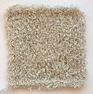

|
||
Premium Patterns Wintry Mix Mitts Love Bytes HawkeyeFree Patterns Kiddie Cadet Summerlin Ruffled Scarf Seamless DS Sock Simply Seamless Pouch Myriads of MushroomsExtras DIY Mitten Blocker Felt Patch Tutorial Yarn Dyeing Tutorial Needle Pouches Knitting Journal |
ChinchillaReviewed by Grace Schnebly
Manufacturer: Berroco First LookAs soon as you pick up a ball of Chinchilla you will realize that this yarn is soft and silky. It feels great against your skin and is described as having the feel of velvet. The yarn has an eyelash texture with shorter fibers (about 5mm to 7mm) attached to the core. The core doesn’t feel as soft as the pile but when knitted into a fabric or in ball-form this is unnoticeable. The entire yarn, core and pile, is composed of a single color, however the fuzzy texture of the and slight sheen of this yarn gives the knitted object depth. The resulting fabric is very light, has very little structure, and no stitch definition. The Good, The Bad, and The SnugglyOnce you start working with Chinchilla, you will notice that it sheds. A pile of very fine fibers will start to build on your lap, and the finished item will continue to shed with wear. Garments made from this yarn will probably have to be groomed often. However I have not noticed that shedding affects the appearance of fluffiness of the yarn itself, but over time it may become fuzzy instead of furry. This sort of shedding makes Chinchilla a poor choice for garments or toys made for babies, which is really unfortunate in my opinion. I made a Harry Bear using this yarn, and it came out adorable, furry, and very soft! However I could only imagine a baby chewing on it and getting a mouthful of fuzz. If you do use this yarn for garments or toys, make sure the recipient is old enough to know not to put it in their mouth. Also the fact that Chinchilla is dry clean only makes it an impractical choice for baby items. I personally feel that this yarn makes great stuffed animals because it is super soft, and the texture makes seams disappear A downside of the furry texture of this yarn is that it makes it almost impossible to find stitches which have slipped off your needles. You would be lucky if you could pick it back up before it starts to migrate down your work, and once it starts to create a run it seems almost impossible to fix. Similarly, it is important to take notes and keep track of your pattern as you work with this yarn because if you get lost it can be really hard to find your place. The furriness of the yarn makes it very hard to count rows and stitches. Because of these few problems, I wouldn’t recommend a beginning knitter use this yarn or any eyelash yarn of this nature. Blocking and WashingChinchilla is made of 100% viscose rayon, which means it is made of natural fibers. Viscose rayon is usually made from wood pulp or cotton, and although it is man-made it is not synthetic. This material becomes weak when wet and can become permanently damaged if washed with water by hand or machine. Items can become misshapen or fall apart if not cared for properly. Also many dyes used on rayon can run or bleed if the fiber gets wet, causing your item to become blotchy or uneven in color. When caring for your items made from Chinchilla be sure to follow the manufacturer’s instructions by taking it to the dry cleaners. It would be sad to spend the time, effort, and money on a garment just to have it get ruined in the wash. Also you need to take extra care when blocking Chinchilla for the same reasons listed above. I think the best technique would be to steam block your item only if necessary. You can further protect your item by blocking with the wrong side facing the iron or by placing a cloth in between the fabric and iron. Remember rayon is not a synthetic material! Pros
Cons
ConclusionsChinchilla is a super soft and silky chenille yarn which is fun to work with. I think that this yarn would be great for stuffed animals, keeping in mind that it isn’t a great yarn to have around babies or very small children. However I couldn’t really imagine myself making a sweater or large article of clothing out of this yarn simply because of the texture and that it must be dry cleaned. This is just my personal taste though, and I probably wouldn’t use this yarn for anything other than toys and small items like a hat or scarf possibly. This is a fun yarn to work with and I would recommend it to any knitter that is looking for an eyelash chenille yarn. |
   Recent ReviewsRecent Posts
 Our Favorites
|
| © 2007 KathrynIvy.com | ||
{kind=link}
{kind=link}